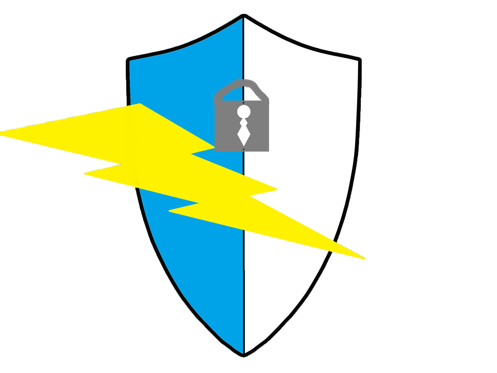
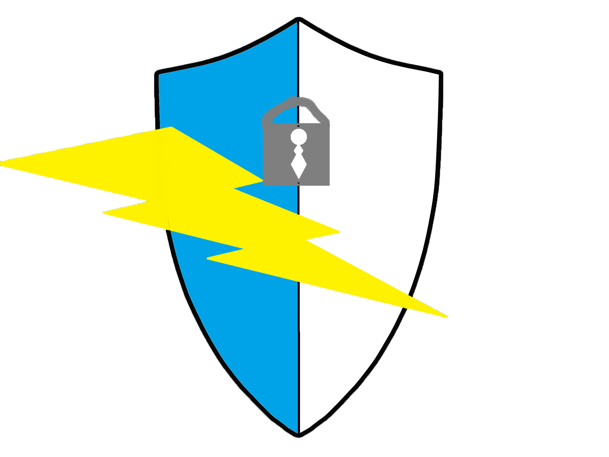

Een back-up/kopie
Een back-up is een kopie van de bestanden op je computer die dient als reserve.
Die kopie kan handig zijn als er iets gebeurd met je bestanden.
Het is erg vervelend wannneer bestanden per ongeluk worden verwijderd,
beschadigd raken of dat de computer vast loopt en kapot gaat
of besmet raakt met een virus van criminelen.
Hoe erg de schade is hangt natuurlijk af van hoeveel dingen u erop heeft staan.
Maar u kunt de schade enorm verlagen door back-ups te maken van uw bestanden,
hierdoor kan de verloren informatie teruggehaald worden.
Een back-up van alles
Je kan heel eenvoudig een back-up maken van al je bestanden etc.
De eerste keer kost het wat meer tijd,
maar daarna gaat het steeds sneller en kost het amper nog tijd.
Na de eerste keer worden alleen de veranderde bestanden aan de back-up toegevoegd.
- Je kan nooit een back-up te veel hebben
- Zorg ervoor dat je meerdere back-ups hebt en bewaar deze altijd op 2 of meer plaatsen.
Op een harde schijf voor de automatische back-up en op een harde schijf die je ergens anders hebt,
bijvoorbeeld bij familieleden of de buren. - De grootste oorzaak van een malwarebesmetting is 'lekken' in de software.
Deze lekken kunnen misbruikt worden door criminelen, die het appartaat kunnen bestemetten. - De eigenaar kan zelf ook voor malwarebesmetting zorgen,
bijvoorbeeld door websites, zoals sommige pornowebsites,
of websites met gratis muziek/mp3-bestanden te bezoeken. - Door free software zoals spyware te downloaden,
kan men ook geinfecteerd worden met malware.
Malware
Malware is elk type software dat gebruikt wordt om computersystemen te irriteren,
gevoelige informatie te verwerven of om access te krijgen tot privé systemen.